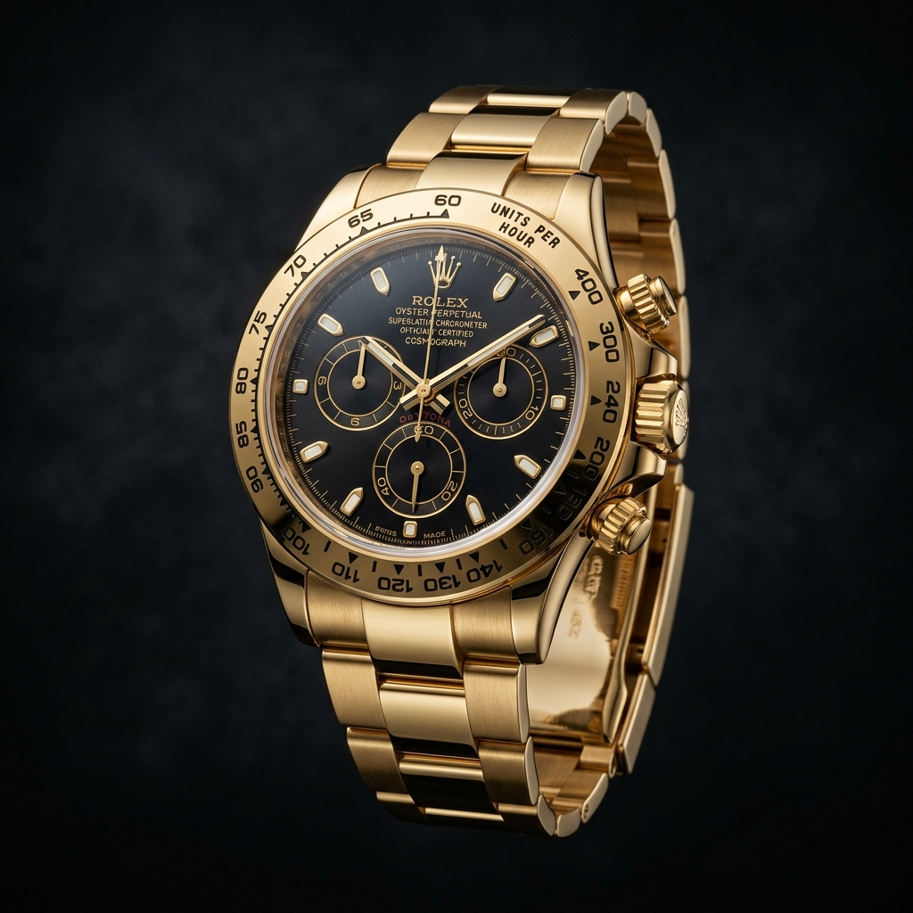

37 лет страсти к совершенству швейцарской часовой механики

В 1987 году основатель MEGA LUX Андрей Соколов открыл первый монобутик швейцарских часов в Москве. Его страсть к механическим шедеврам и глубокие знания о мануфактурах Женевы, Ле-Локля и Гласхютте превратили небольшой магазин в легенду российского рынка роскоши.
Сегодня MEGA LUX — это не просто магазин. Это место, где каждый клиент получает персонального консьержа, эксперта-часовщика и гарантию того, что приобретаемое изделие является настоящим произведением искусства.
Мы работаем напрямую с официальными дистрибьюторами и некоторыми мануфактурами, что позволяет предлагать редкие ограниченные издания, которые недоступны в обычных магазинах.
Каждый член нашей команды прошёл обучение в Швейцарии и обладает глубокими знаниями о мануфактурах